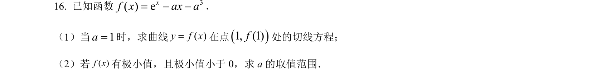
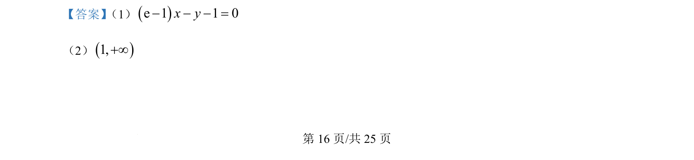
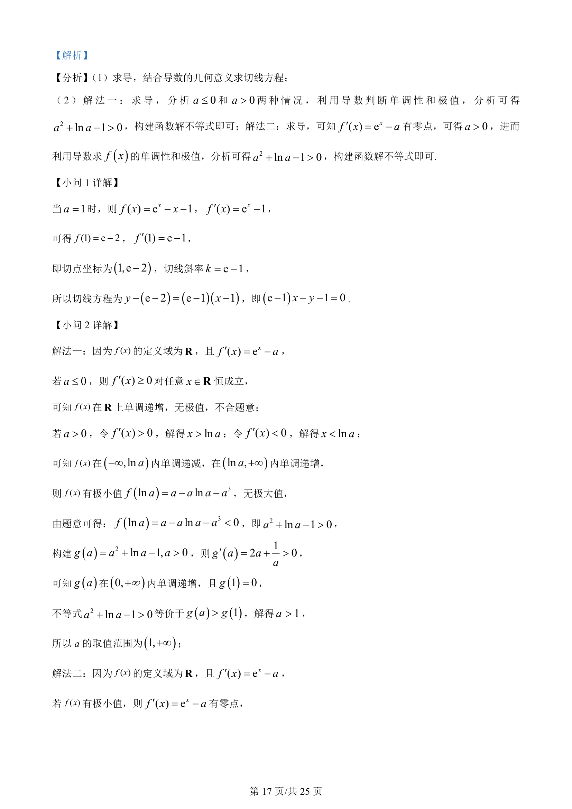
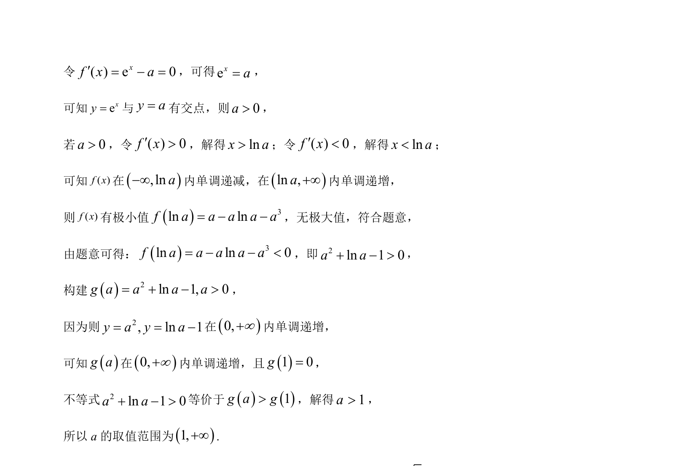

考点：导数几何意义 利用导数研究函数的单调性 函数极值 构造法
导数几何意义
利用导数研究函数的单调性
函数极值
构造法

利用导数求切线方程，通过讨论单调性与极值条件构造新函数解不等式求参数范围。



📄 原 PDF 第 16 页：素材/真题/吉林/2008-2024·（吉林）数学高考真题/2024年高考数学试卷（新课标Ⅱ卷）（解析卷）.pdf
素材/真题/吉林/2008-2024·（吉林）数学高考真题/2024年高考数学试卷（新课标Ⅱ卷）（解析卷）.pdf
【答案】 （1）()e 1 1 0x y- - - = （2）()1,+¥ 【